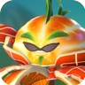
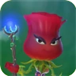
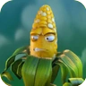
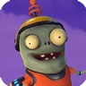
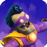
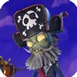

Plantas
Citrinador

O Tanque da equipe capaz de usar um laser infinito que superaquece depois de um certo tempo suas habilidades são seu escudo que pode bloquear tiro e projeteís dos zumbis. O Pêss E.M um pessêgo que ao atingir um zumbi deixa ele atordoado tornando-o incapaz de atirar e usar habilidades e por fim ele pode virar uma bola que pode se locomover e derrubar os zumbis.
Rosa

Planta mágica capaz de atirar espinhos teleguiados e planar no ar. Tem habilidades mágicas como atrasar um zumbi, transformar ele em cabra ou entrar num enigma arcano que deixa ela imortal por um tempo e pode causar dano.
Coronel Milho

Planta de guerra que usa duas metralhodoras que grãos de milho para atacar os zumbis. Suas habilidades são: seu bombardeio de manteiga que explode zumbis, um salto onde le metralha quem está embaixo dele e dois grãos explosivos que explodem o zumbi que for acertado.
Zumbis
Zumbinho

Pequeno zumbi que tem pistolas velozes e um jetpack que faz com que ele tenha um pulo duplo, Suas habilidades são: uma bomba de gravidade que deixa plantas flutando imobilizando elas, um giro aonde ele começa a rodar e atirar que nem um lunático e por fim seu robô-z um mecha poderoso que usa mísseis e pode pisar bem forte no chão além de atirar com uma metralhadora em sua mão.
SuperMioloz

Um grande super héroi que usa seus punhos para socar as plantas e um raio laser que pode superaquecer se usar muito. Suas grandes habilidades são: seu chute heroíco que empurra as plantas, um giro que causa dano as plantas que estão ao redor e por fim uma super bola que ao acertar uma planta causa um bom dano.
Capitão Barbamorta

Um grande pirata que usa uma arma que atira a longa distância e que a curta distância pode ser usada como uma doze, suas habilidades são: um barril explosivo que ao ser estourado derruba plantas ao redor, um canhão gigante com disparos limitados e por fim um papagaio semelhante ao dronalho do cacto que também tem um explosivo que causa dano em àrea.